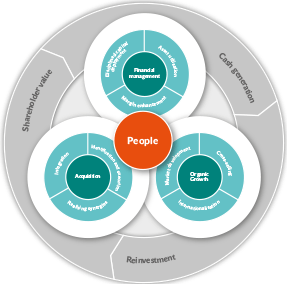

...Growing sustainably
The strategy of the Group is to focus on maximising Shareholder value from outsourced
commercialisation services, by capitalising on its existing market leading positions as the
demand for specialist outsourced services in the healthcare sector increases, driving higher
levels of growth and profitability. We aim to drive growth through a combination of organic
growth supplemented by strategic acquisitions, which will drive increasing

People at the core
Attracting and retaining talented leaders is essential for UDG Healthcare to sustain its growth model.
Delivering value
Successful delivery of our strategy will result in increased shareholder value through share price
appreciation and dividends. Disciplined financial management and increased cash generation will
allow for on-going re-investment in the business to sustain the growth model and capitalise on the
opportunity to grow our services.